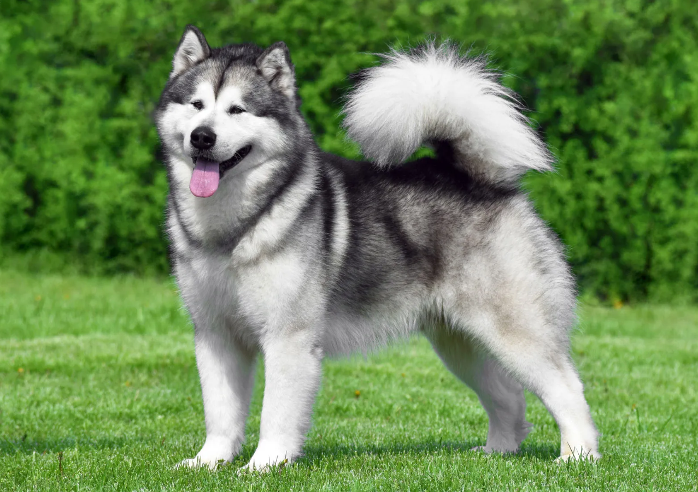

ALASKAN
Weight:
12-20 lbs.
10-18 lbs.
Height :
13 in.
17 in.
Length:
Medium .
Color:
Variety of colors with white.
Longevity:
15 – 20 yrs.
Alaskan personality
The Alaskan klee kai is an intelligent, high-activity dog. However, they are not hyper. Unlike other husky breeds, they are highly trainable and make good watchdogs. Also unlike their cousins, they are suspicious of strangers. They require their owner's attention and are most likely found at their owner's side. They talk back and howl, but are not excessive barkers. Occasionally, a klee kai will be people-shy. This temperament is considered undesirable and dogs with this temperament are neutered.Klee kai need a moderate amount of exercise. Because of their intelligence, they can become escape artists. If unhappy, the klee kai can escape through fences. Klee kai have a sense of humor and may play tricks on their owner. They excel in the sport of dog agility.
What to expect
Klee kai need a large amount of interaction with their owners. They tolerate other dogs well. They are hunters and should be raised together with cats, if their owner is planning on one. The owner should be careful around pet rodents, birds and reptiles, as their husky prey drive is strong. Because they are clever, no pocket pet will be safe from them. Klee kai make excellent watchdogs, but their size precludes them from being guard dogs. They accept family members and strangers, if introduced by the owner. They are hardy dogs with winter coats, but should not be left outdoors. They need a minimal brushing and combing once a week. Like cats, they are fastidious and keep themselves clean. Klee kai are ideal for owners who want a small, active dog that does not require a large yard and can be content with walks and games of fetch. klee kai do not do well left alone for long periods. Anyone who cannot tolerate dog hair and shedding should consider another breed. Klee kai are long-lived, with claims of 15 to 20 years not unusual.
History of the Alaskan
The Alaskan klee kai (pronounced KLEE-ki) means small dog in an Eskimo dialect. This breed is a recent one, developed in the early 1970s by Linda Spurlin in Wasilla, Alaska. She discovered an undersized Alaskan husky and fell in love with it, deciding it would be the ideal companion. Starting with this dog, Spurlin bred Alaskan huskies and Siberian huskies to create the klee kai, perhaps adding a schipperke and American Eskimo to obtain a smaller size. In 1997, the United Kennel Club recognized the Alaskan klee kai. Even with this registration, the Alaskan klee kai is a rare breed with only 700 dogs.